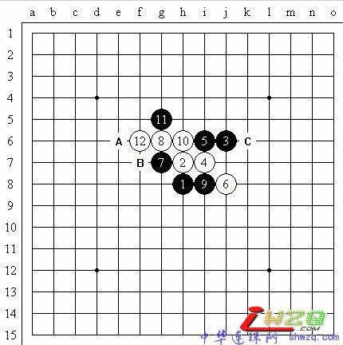
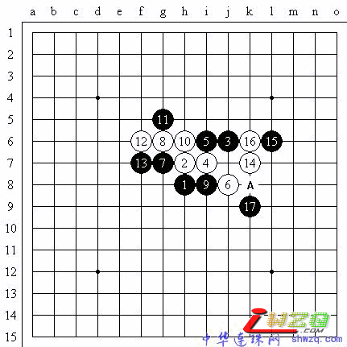
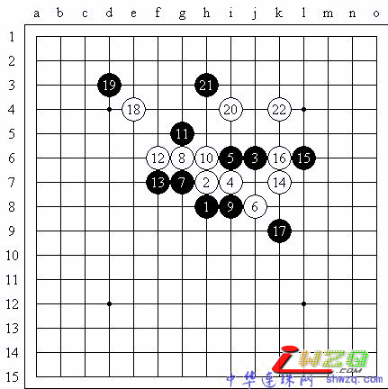

与胜利擦肩而过——第46期日本名人赛首局讲评
#1 与胜利擦肩而过——第46期日本名人赛首局讲评 作者：有志青年 发表时间：2008-11-21 14:53:17
原文地址：[目前有木马，病毒消除后完善此链接]
尽管没有中村茂出席的日本名人战多少显得有些乏味，但这次是年轻一代的代表人物冈部宽七段首次打进五番棋决赛，总算还给了人们一些亮点和希望。的确，由中村茂、长谷川一人、河村典彦、山口釉水等为代表的中生代棋手把持日本连珠棋坛的中心位置已经够久的了，或许是该到推陈出新的时候了，所以不少人对冈部宽这次挺进决赛还是寄予了很大希望的。
第一局双方通过猜先，长谷川一人名人执黑布局“疏星”，冈部宽自然没有提出交换。长谷川和冈部的棋风都是属于慢慢磨的主，而长谷川作为经验丰富的老资格棋手，更适应番棋赛的节奏，因此，赛前不少人士认为冈部如果要想有所作用，第1、2局是关键，最好能取胜1局，这样才能打乱长谷川的步伐。 实战黑5（见图1）的打点已经好久不曾看见了，记忆里长谷川对这个变化还是比较熟悉的。实战的白6是老变化，也是目前为止认为最好的应对点。另外还有一个比较常见的白6走C，这是欧洲棋手在2002年前后研究发现的。实战双方应对到白12都是定式，黑13这时比较普遍的选择是A点，但是近年来的研究表明，黑13走A点以后的变化，似乎是白棋比较好下，可能就是因为这样的考虑，实战的黑13长谷川选择了B点的防御。 图1 冈部宽的白14（见图2）是具有攻击性的好棋，至此白棋的作战策略应该是奏效的。黑15是坚实的防御，白16则是更为机敏的一着，黑17的防御比较松懈，可能长谷川认为白棋现在缺乏有效的手段组织进攻，但实际上此时的名人在不知不觉中已经把黑棋推到了死路上，因为局后研究黑17只有走A才是唯一的防御。而同时针对这个黑17局后发现白18（见图3）是很妙的一手，尽管局部的黑19有比较强的防御点，但面对白20、22这样连续的手筋，黑棋彻底崩溃。 
图2

图3
#2 Re:与胜利擦肩而过——第46期日本名人赛首局讲评 作者：茗弈小刀 发表时间：2008-11-24 12:37:03
顾老师的解说很精练，给人赏心悦目的感觉，学习了。